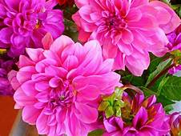

to know about my favorite flower, visit
tulipsif you want to search something about flowers.
click here rosesA flower is the part of a plant that blossoms. Flowers produce the seeds that can become new plants. Most plants, including many trees, grow some kind of flower.
A flower usually has four main parts.
Pollination is the process by which flowers form seeds. This is how plants reproduce.
There are two main kinds of pollination
to know about my favorite flower, visit
tulipsif you want to search something about flowers.
click here roses